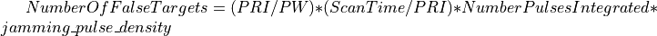
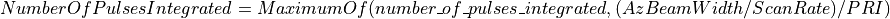

WSF_FT_EFFECT¶
- effect WSF_FT_EFFECT¶
...
effect <effect-name> WSF_FT_EFFECT
... WSF_PULSE_EFFECT Commands ...
false_target_name <string-value>
jamming_pulse_density <real-value>
scan_rate_multiplier <real-value>
system_type_data <system-type-name> ... end_system_type_data
end_effect
...
Overview¶
This base effect type can be included in the electronic_protect or electronic_attack technique block as one of the many available effects for a given technique. The commands listed below are the base-type commands that can be specified in the effect block for this effect type.
Commands¶
- false_target_name <string-value>¶
Specifies the false-target name of the false_target definition to be used by this effect.
Note
If not specified then automatic generation of false-targets will be done and default radar parameters will be used in conjunction with the default_pulse_density to generate false-targets. The radar transmitter is required to have the pulse_width and pulse_repetition_interval defined for automatic generation of false-targets.
- jamming_pulse_density <real-value>¶
- jamming_duty_cycle <real-value>¶
Specifies the jammer pulse density in range [0,1] for generating false targets. This input will override the specified quantity if a false target name is input. This input is used to calculate the number of false targets according to the following:
 
Default: 0.1
- scan_rate_multiplier <real-value>¶
Specifies the false target generation scan rate multiplier for regenerating false targets. This input will be multiplied by the specified scan_rate if a false target name is input, else the scan rate of the false targets is equal to the frame_time times the scan_rate_multiplier.
Default: 1.0
- system_type_data <system-type-name> … end_system_type_data¶
Input block to provide the system type (e.g., SENSOR-TYPE, JAMMER-TYPE) specific data necessary to implement this technique for a given system type. Default data can be set up for system types not defined using the “default” string as the system type.
system_type_data <system-type-name> ... WSF_PULSE_EFFECT Commands ... false_target_name <string-value> jamming_pulse_density <real-value> scan_rate_multiplier <real-value> end_system_type_data <system-type-name> A string input of the system-type the following data applies to, valid values are [system-type-name | "default"]. Default data is used for unspecified system-types and if not defined no effect will be applied for the given system-type.